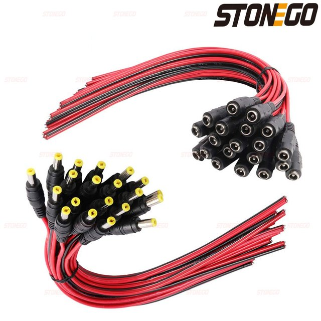
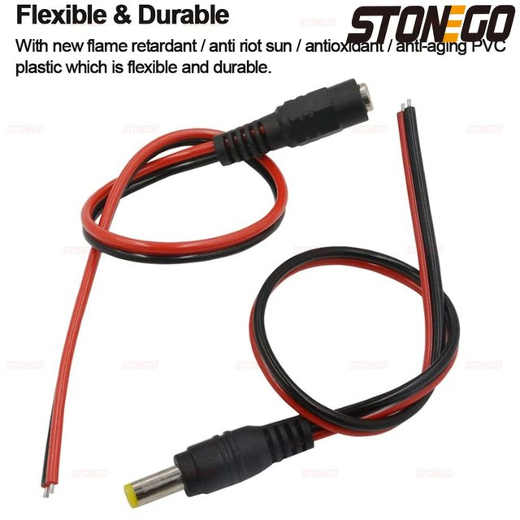
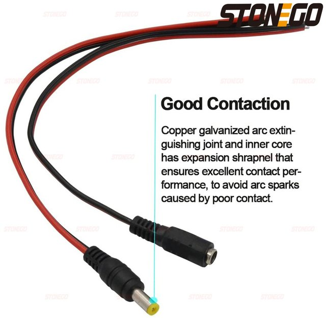
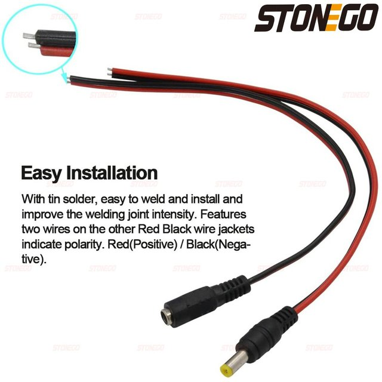
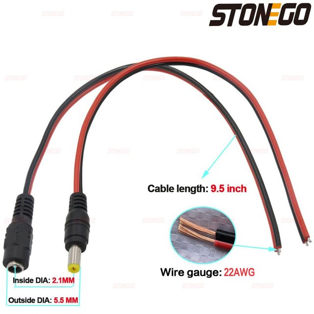
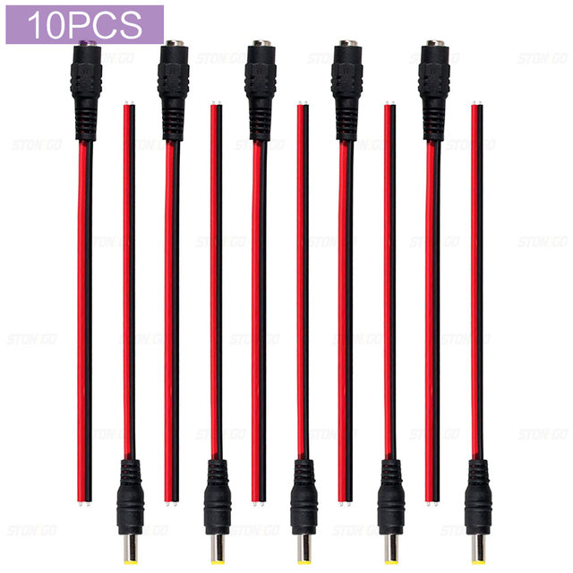
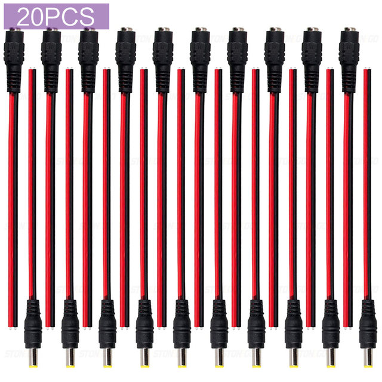
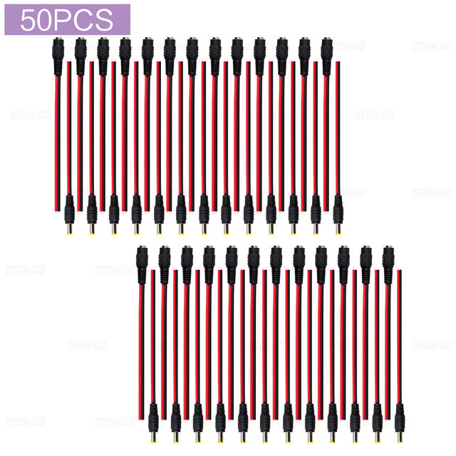

Package include:
10PCS: 5Pairs (5PCS Female Wire& 5PCS Male Wire)
20PCS: 10Pairs (10PCS Female Wire & 10PCS Male Wire)
50PCS: 25Pairs (25PCS Female Wire & 25PCS Male Wire)
Overview of product parameters:
Rated temperature: -20°C — +90°C
Rated voltage: 1V-36V
Connector polarity: internal positive + (red wire); external negative-(through black wire)
Conductor specification: single 0.3mm (0.3 square)
Insulation: PVC sheath
Insulation material: environmentally friendly polyvinyl chloride (PVC)
Conductor material: TS/AS single oxygen-free pure copper
Single or stranded bare copper or tinned copper wire (tinned copper wire is 0.12mm-0.4mm)
Functional use: used for monitoring or LED and other electronic equipment
Transmission characteristics: tuning fork buckle, good contact point
Long service life, easy to be soft and easy to install







